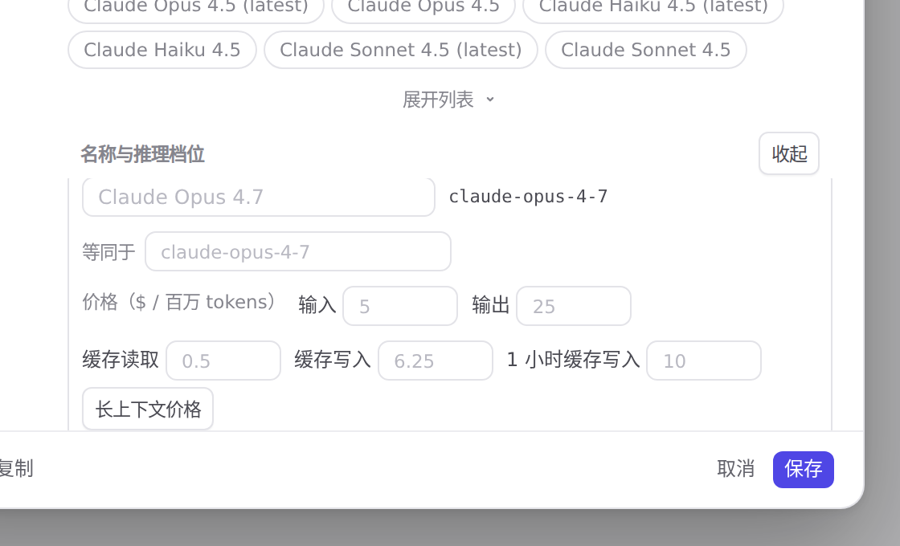
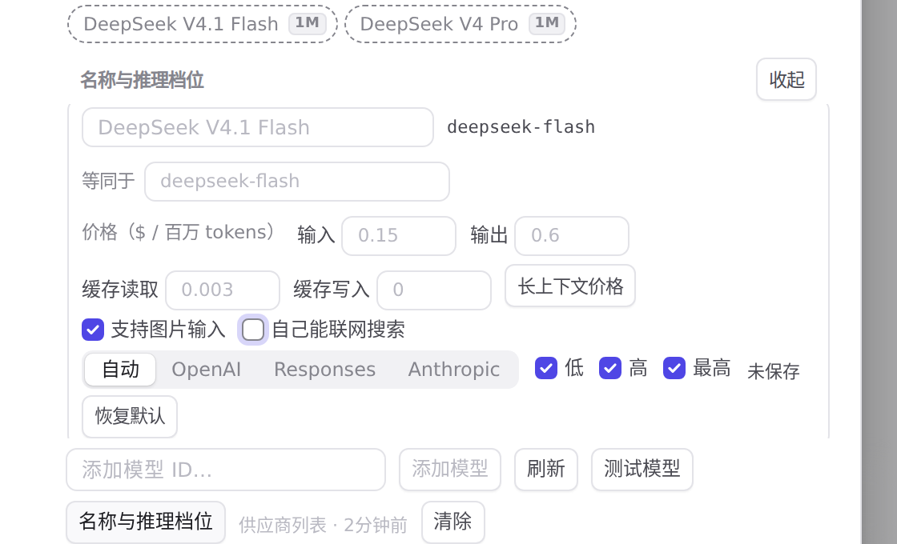
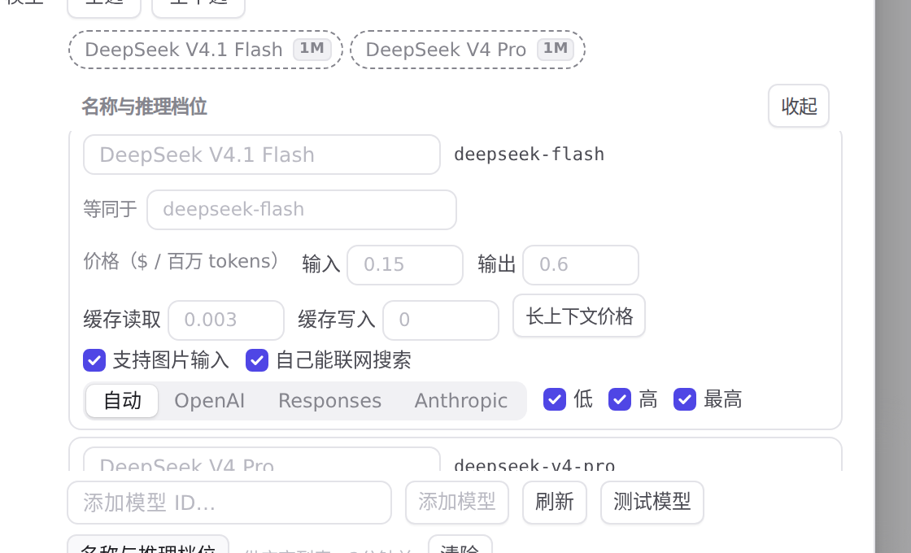

#1160 界面预览
commit 686e947 · 回到 PR · 供应商编辑器的「名称与推理档位」里，每个模型行在「支持图片」旁多了一个「自己能联网搜索」勾选，答案随 Save 存进设置的 modelSearches、Cancel 丢弃、Restore default 交回默认；勾上但供应商没有 Anthropic/Responses 地址时会显示一行提示。
红线是鼠标走过的轨迹，红色圆环是一次点击；底部文字是这一步在做什么。空格暂停，← → 逐段查看。
 按模型的联网搜索勾选：勾上、未保存、恢复默认 · 这一行里「自己能联网搜索」勾选与「支持图片」并排
按模型的联网搜索勾选：勾上、未保存、恢复默认 · 这一行里「自己能联网搜索」勾选与「支持图片」并排

按模型的联网搜索勾选：勾上、未保存、恢复默认 · 点击之后这一行：勾选、未保存标记与提示文字
 按模型的联网搜索勾选：勾上、未保存、恢复默认 · 点过「恢复默认」之后的这一行
按模型的联网搜索勾选：勾上、未保存、恢复默认 · 点过「恢复默认」之后的这一行
 Chat 供应商上的按模型答案与地址提示 · 这一行里「自己能联网搜索」勾选与「支持图片」并排
Chat 供应商上的按模型答案与地址提示 · 这一行里「自己能联网搜索」勾选与「支持图片」并排

Chat 供应商上的按模型答案与地址提示 · 点击之后这一行：勾选、未保存标记，以及地址相关的提示

Chat 供应商上的按模型答案与地址提示 · 点过「恢复默认」之后的这一行